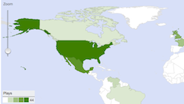

The Backlot UI displays your analytics data in graphs and charts.
Here some the various graphical displays of analytics data on the ANALYZE page on Backlot UI are matched to the API requests that return the data underlying the statistical graphics.

The call to get the underlying data for this display for all videos:
[GET]/v2/analytics/reports/account/performance/countries/2012-01-01...2012-11-11
The call to get the underlying data for this display for an entire year:
[GET]/v2/analytics/reports/account/sharing/videos/2012-01-01...2012-12-31